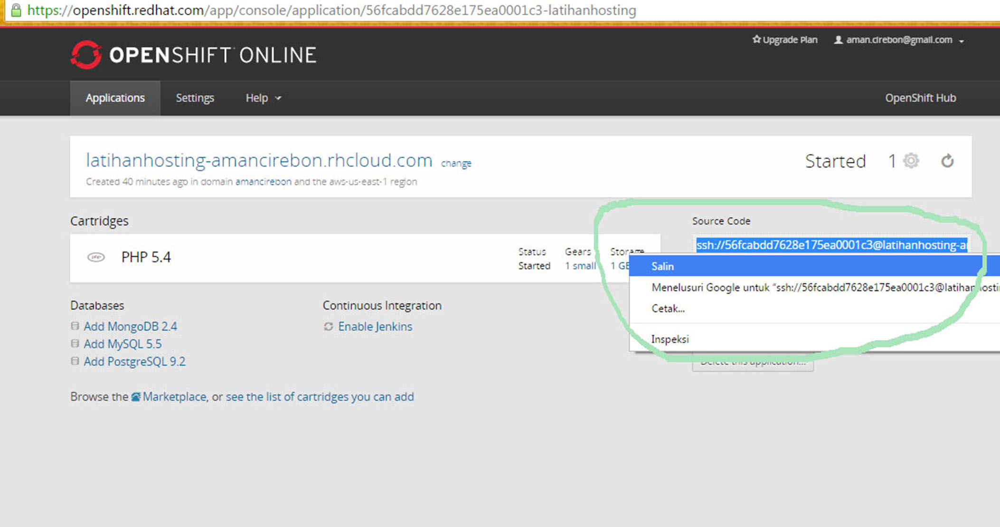

Membuat artikel
ada beberapa langkah sebelum membuat aplikasi dijava meliputi :
Install Java SDK
Setting Environment Variable
Instal Git
Install TortoisGit
sesuai dengan ketentuan materi kuliah pemograman 4 ada beberapa tahap sebelumnya membuat registrasi domain akun diopenshift terus deploy di cloud , pembelian domain sampai bisa diakses dengan nama domain sendiri , membuat ssh-key, clone file atau mendeploy kembali dengan mengcommit dari aplikasi TortoisGit yang sudah terinstall di laptop,mari kita membahas artikel saya ini dengan langkah-langkah sebagai berikut :
Membuat webserver di openshift
1.Buat akun di openshift dan isikan username serta password kita
2.Verifikasi email yang dikirim dari openshift
3.Create Application

4.Pilih aplikasi yang akan dibuat, contohnya Jekyll
5.Isi public URL dengan yang kita inginkan
kemudian klik create application
6.Aplikasi sudah jadi
kita bisa cek dengan mengakses public url yang kita isi tadi berikut tampilannya
7.Generate public key dengan menjalankan Putty
8.isi key passphrase dengan yang mudah diingat, misal "pemograman4"
9.klik save private key dan public key simpan di folder yang mudah diakses kembali
berikut hasil yang disimpan di folder
10.sebelum membuat set ssh
kita Copy text yang ada di textbox public key ke ssh public key di akun openshift kita
11.beri nama pada key nya misalnya ssh-key dan paste text yang tadi dicopy pada textbox di bawahnya
12.klik create untuk membuat ssh key dan sukses berikut tampilannya
13 Clone source dari openshift kita perlu mengetahui akses URL ssh dan mencopy alamat ULR tersebut, berikut tampilannya
14.Pada tampilan git clone masukkan URL dari source kode ssh openshift tadi selanjutnya ceklis Load putty key cari file private key yang tadi kita simpan
15.masukkan passphrase yang tadi kita isi yaitu "Pemograman4"

16.selanjutnya di klik OK , maka akan melakukan proses cloning latihanhosting yang saya buat dari platform openshift
berikut tampilannya hasil proses cloning dengan status succes
Membuat artikel
1.Setelah folder latihanhosting muncul untuk web berbasis html lalu kita edit menggunakan notepad++ serta mengcopy folder images yang isinya hasil printscren langkah-langkah pembuatan web di openshift
2.Setelah itu kita deploy kembali file tersebut ke openshift
3.Selanjutnya kita klik commit
4. hasilnya Sukses, berikut tampilannya

5.Setelah sukses di commit lalu kita push ke openshift
6.Push ke master
7.Push sukses, lakukan cara seperti di atas pada file-file lainnya yang akan di upload ke openshift
8.Setelah push sukses, kita coba akses kembali aplikasi yang kita buat tadi
masuk ke akun openshift kita atau klik di aplikasi
latihanhosting
Membuat Artikel berhasil di buat
TAHAP BELI DOMAIN
saya akan order pembelian domain di Idwebhost
dan cek ketersediaan domain yang kita inginkanOrder atau beli domain yang kita inginkan dan ikuti langkah-langkahnya
1. Registrasi dan mendaaftarkan dan ada beberapa biodata kita untuk memvalidasi supaya bisa login , berikut tampilannya
2. ketik nama domain kita misalkan amanpandawa untuk periksa kesediaan domain apakah bisa di order, berikut tampilannya
3. Mengetahui Ringkasan Pemesanan yang akan kita order dan melakukan pembayaran atau Tranfer Lewat ATM, berikut tampilannya
4. Menyelesaikan pemesanan dengan menceklis dan menyetujui order yang kita pesan, berikut tampilannya
5. Menerima faktur online untuk melakukan transfer pembayaran lewat ATM atau Internet Banking, berikut tampilan faktur yang telah di proses
6. setelah melakukan pembayaran lalu kita melakukan konfirmasi dengan mengirim bukti transfer atau struk bukti pembayaran meliputi Email,Nomor Faktur, Domain, nama pemilik Rekening, serta banyaknya jumlah dan yang kita transfer, berikut tampilannya
berhasil
selanjutnya masuk Login di URL Login
7. Masuk menu Domain di alat pengelolaan selanjunya mengubah nameservers terdahulu di area clien di manage nameservers, berikut tampilannya
8. Masuk menu Domain di alat pengelolaan selanjunya kelola domain, berikut tampilannya
9. Sukses Domain yang kita buat dengan nama sendiri, berikut tampilannya
selesai